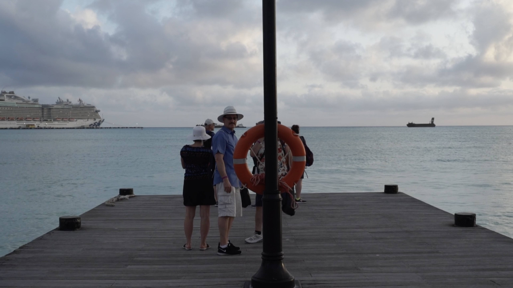
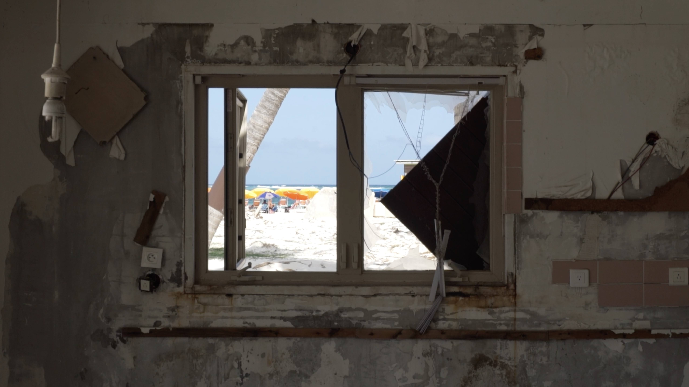
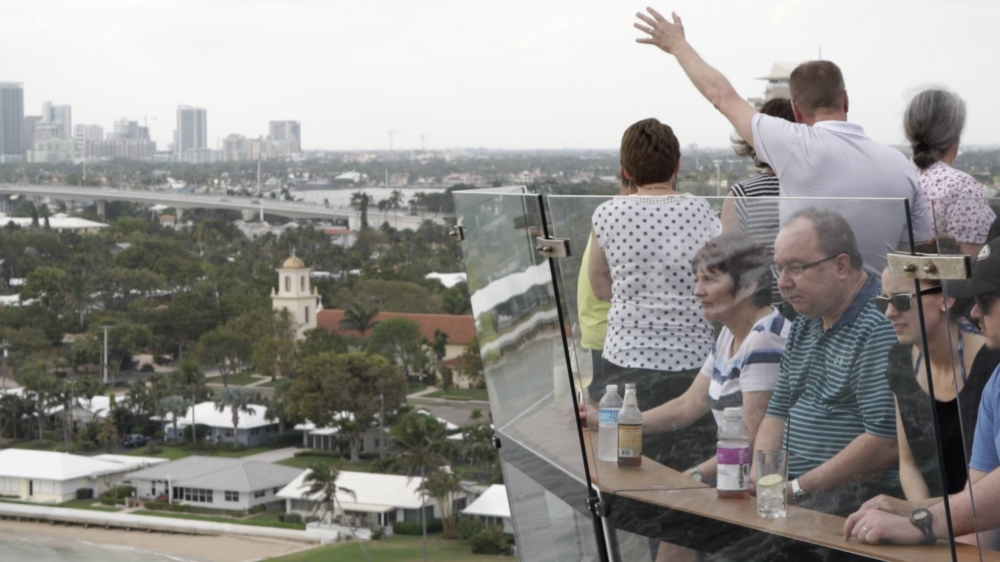
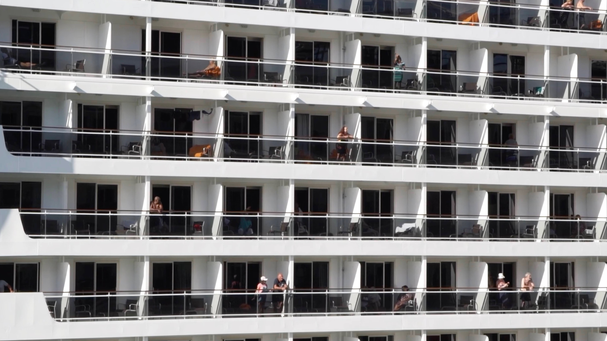

On Reflection
2022 | 9 mins
On Reflection is amassed from miscellaneous observations on the Reflection Cruise Ship and St Martin/Sint Maarten in the wake of Hurricane Irma. Shot in 2018, the film was shaped years later; salvaging the material to consider the hangover of imperialism within the context of the transient and transactional nature of luxury cruise tourism.
Underpinned by an on-ship Catholic mass sermon, the film pays attention to the relationship between power, piety and access; physically, materially and ecologically. The gaze foregrounds the spaces and modalities that specific bodies assume and perform within the realities of wealth and climate inequality.
Screenings
Spit That Out! North West Artist Film Programme, HOME Manchester (2022)
   